Q5. Encounters vs apprehensions vs gotaways
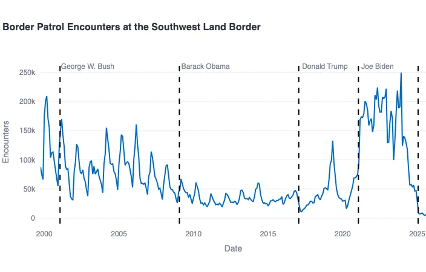
Border Patrol encounters at the southwest border by month, FY2000-2025, with administrations marked. Ari Lamstein (independent data analyst blog) | Date: 2025-10-16. USBP southwest apprehensions/encounters a month. Apprehensions before FY2020; Title 8 + Title 42 encounters after
Source: https://arilamstein.com/blog/2025/10/16/visualizing-border-patrol-encounters-under-the-second-trump-administration/ https://arilamstein.com/wp-content/uploads/2025/10/bp-encounters-combined-datasets.png
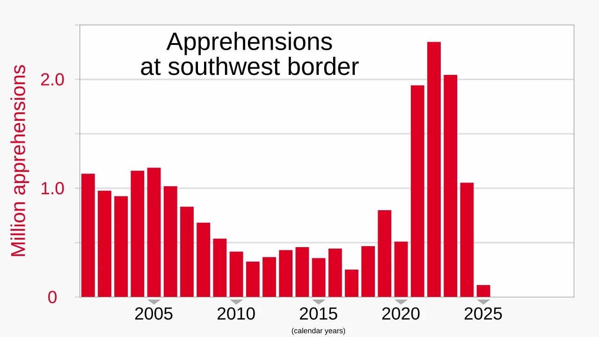
Border Patrol apprehensions at the southwest border, FY2000-present. Wikimedia Commons (RCraig09), from CBP data | Date: Updated May 2026. Annual USBP southwest apprehensions/encounters, millions. USBP between ports of entry
Source: https://commons.wikimedia.org/wiki/File:2000-_Border_apprehensions_at_southwest_border.svg https://upload.wikimedia.org/wikipedia/commons/e/ed/2000-_Border_apprehensions_at_southwest_border.svg
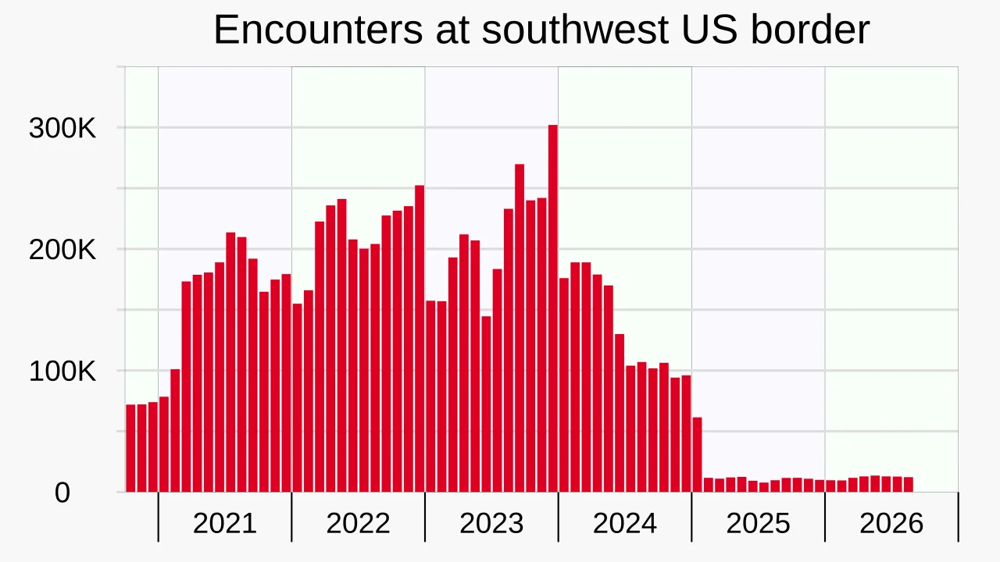
Encounters at the U.S. southwest border by month, 2020-2026. Wikimedia Commons (RCraig09), from CBP data | Date: Updated Sep 2026. Total SW encounters (USBP + OFO) a month. Encounters = Title 8 apprehensions + inadmissibles + Title 42 expulsions; events, not unique people
Source: https://commons.wikimedia.org/wiki/File:2020-_Encounters_at_U.S._southwest_border.svg https://upload.wikimedia.org/wikipedia/commons/a/ab/2020-_Encounters_at_U.S._southwest_border.svg
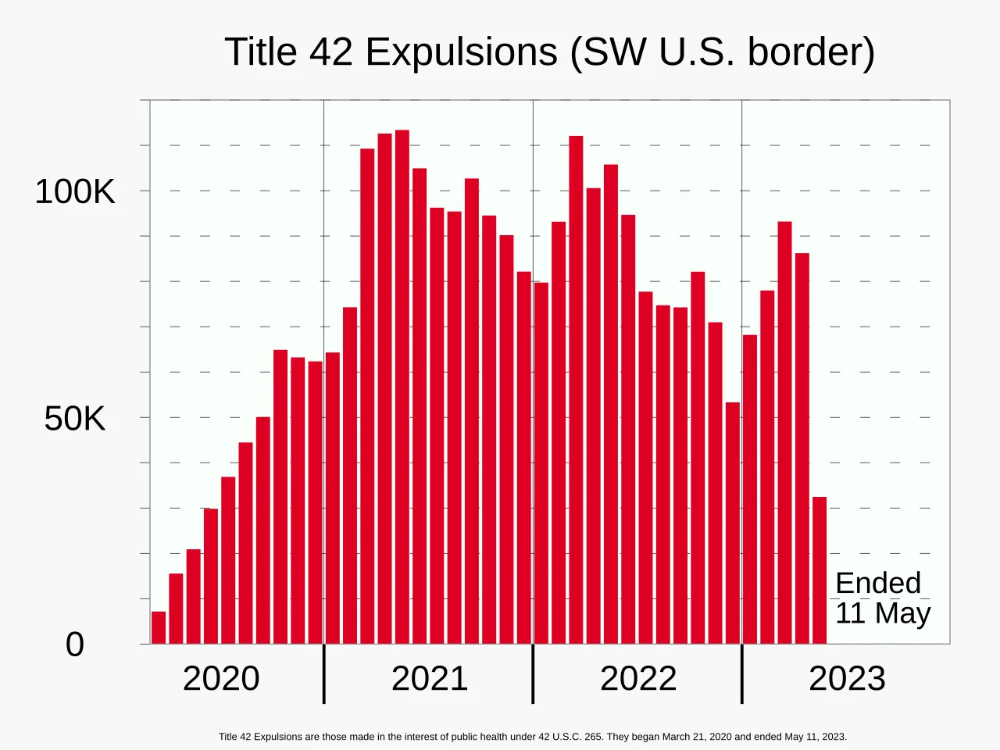
Title 42 expulsions at the southwest border by month, Mar 2020-May 2023. Wikimedia Commons (RCraig09), from CBP data | Date: Updated Sep 2024. Title 42 expulsions a month. Public-health expulsions, not removals; no re-entry bar
Source: https://commons.wikimedia.org/wiki/File:2020-_Title_42_expulsions_-_southwest_U.S._border.svg https://upload.wikimedia.org/wikipedia/commons/3/38/2020-_Title_42_expulsions_-_southwest_U.S._border.svg
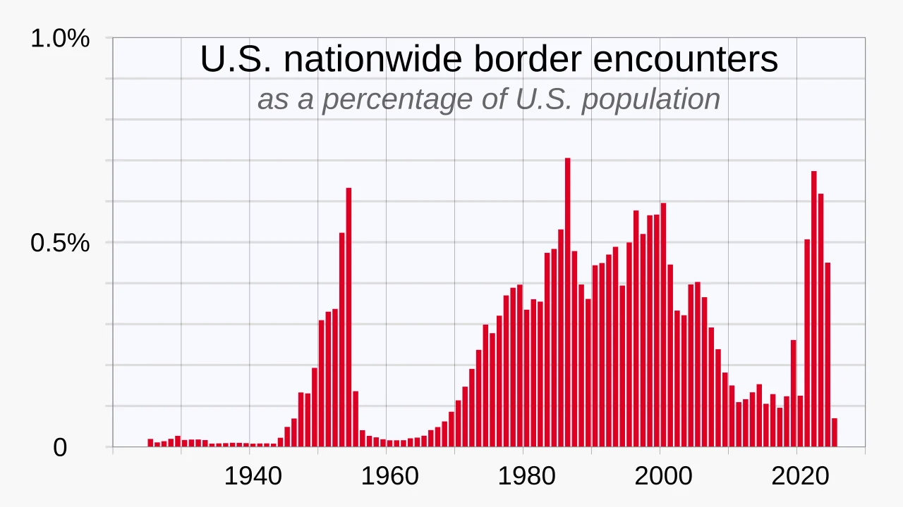
Nationwide border encounters as a % of U.S. population, 1925-present. Wikimedia Commons (RCraig09), from CBP/INS data | Date: Updated May 2026. Encounters scaled by population (puts 2021-23 next to the 1950s and 1980s-2000). Apprehensions/encounters per capita
Source: https://commons.wikimedia.org/wiki/File:1925-_Border_encounters_nationwide_per_US_population.svg https://upload.wikimedia.org/wikipedia/commons/1/13/1925-_Border_encounters_nationwide_per_US_population.svg
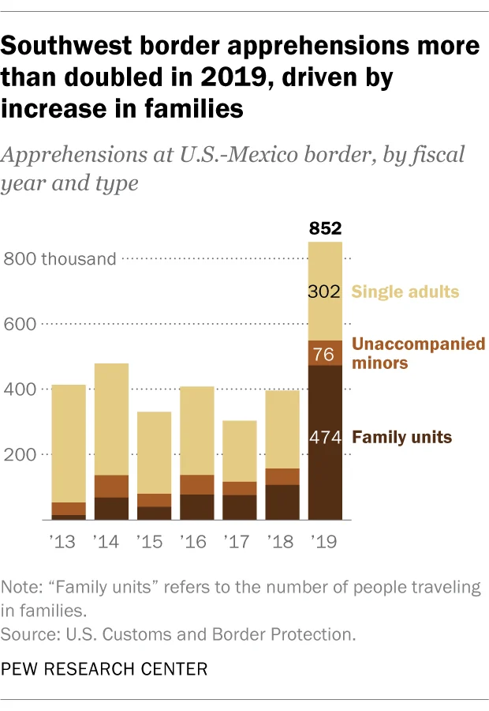
Southwest border apprehensions more than doubled in 2019, driven by families. Pew Research Center | Date: 2020-03-02. USBP SW apprehensions by family type, FY2000-2019. Apprehensions between ports
Source: https://www.pewresearch.org/short-reads/2020/03/02/how-border-apprehensions-ice-arrests-and-deportations-have-changed-under-trump/ https://www.pewresearch.org/wp-content/uploads/sites/20/2020/03/FT-20.02.24_TrumpImmigrationEnforcement_1.png
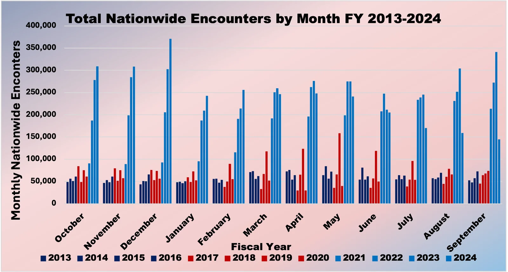
Total nationwide encounters by March of each fiscal year, FY2013-FY2024. Federation for American Immigration Reform (FAIR) | Date: 2025-03-07. Nationwide CBP encounters, fiscal year to March. CBP encounters (events)
Source: https://www.fairus.org/issue/how-many-illegal-aliens-are-united-states-2025-update https://www.fairus.org/sites/default/files/images/2025_pop_Figure3.png
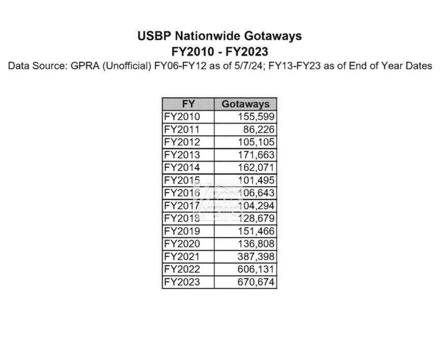
X post: USBP nationwide gotaways, FY2010-FY2023 (CBP FOIA table). @BillMelugin_ (Fox News) on X | Date: 2024-07-26. Known gotaways by fiscal year (FY2021 387,398; FY2022 606,131; FY2023 670,674). Known gotaways = seen or detected but not caught; source GPRA (unofficial)
Source: https://x.com/BillMelugin_/status/1816643617055997981 https://pbs.twimg.com/media/GTYDcOiagAAw3oW.jpg
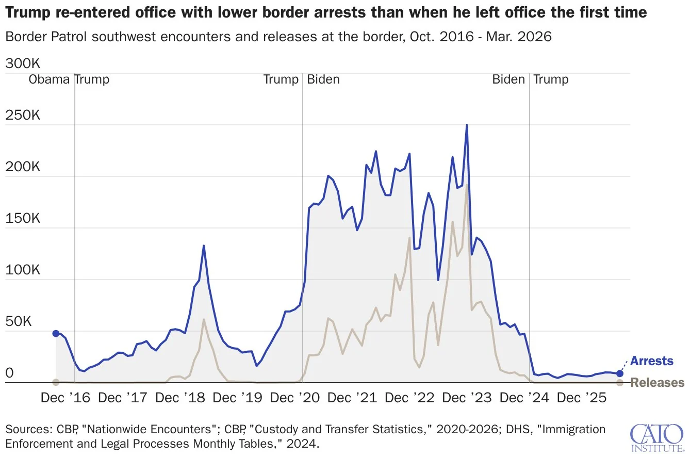
X post: Border Patrol known gotaways, southwest border, Oct 2016-Sep 2026. @David_J_Bier (Cato Institute) on X | Date: 2026-10-09. Monthly known gotaways under Trump 1, Biden and Trump 2. CBP FOIA plus press-reported months; some months estimated from arrests (see chart notes)
Source: https://x.com/David_J_Bier/status/2108546328032686275 https://pbs.twimg.com/media/HUMPcTZWYAEvBeV.jpg
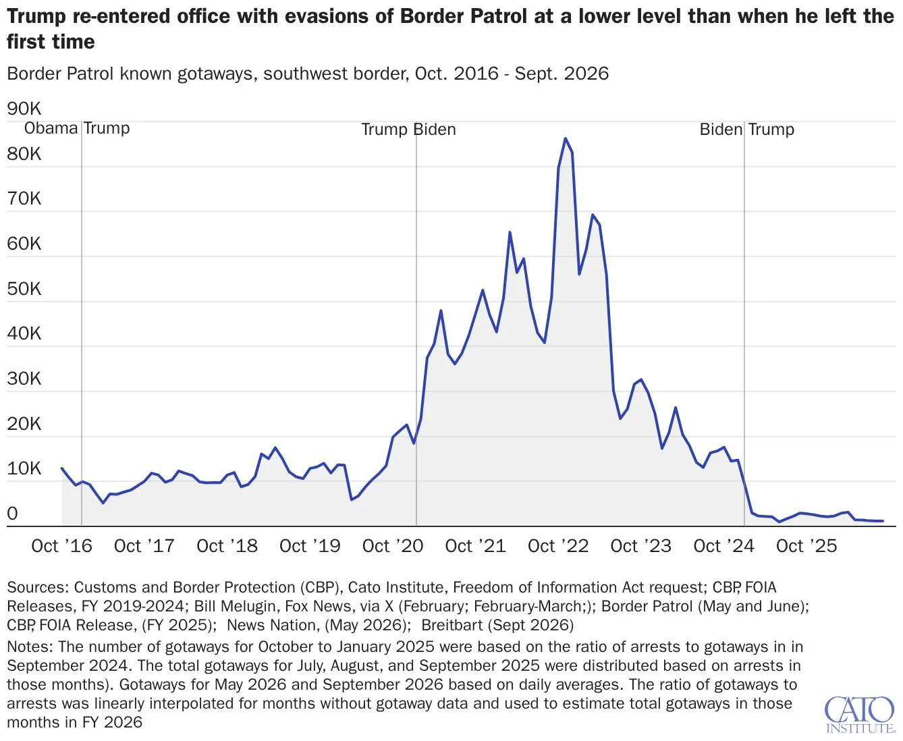
X post: Border Patrol SW encounters and releases, Oct 2016-Mar 2026. @David_J_Bier (Cato Institute) on X | Date: 2026-10-09. Monthly arrests and releases. CBP nationwide encounters and custody data
Source: https://x.com/David_J_Bier/status/2108546328032686275 https://pbs.twimg.com/media/HUMPcTdX0AADTC-.jpg
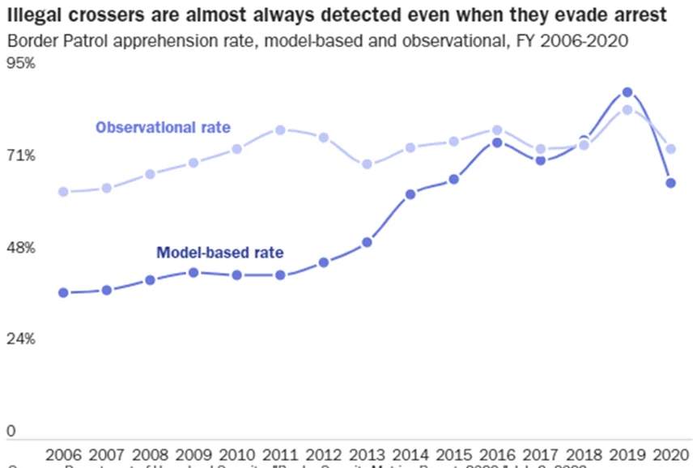
X post: illegal crossers are almost always detected (observational vs model-based rates), FY2006-2020. @David_J_Bier (Cato Institute) on X, from DHS data | Date: 2024-03-04. Detection and apprehension rates. DHS Border Security Metrics: observational vs model-based estimates
Source: https://x.com/David_J_Bier/status/1764749225819070813 https://pbs.twimg.com/media/GH2l9T2WwAEXTR-.png
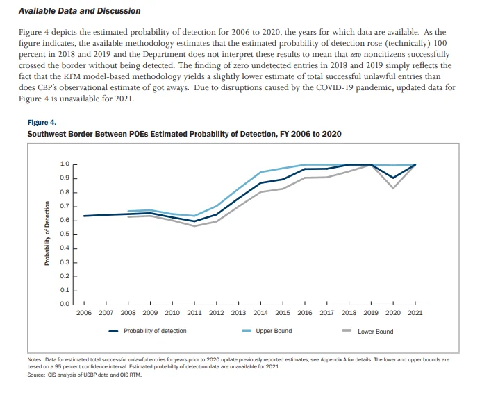
X post: DHS estimate of the probability of detection at the SW border. @ReichlinMelnick (American Immigration Council) on X, screenshot of a DHS report | Date: 2024-05-17. DHS model of detection probability (bears on unknown gotaways). DHS Border Security Metrics Report methods
Source: https://x.com/ReichlinMelnick/status/1791562840899277035 https://pbs.twimg.com/media/GNzovJ5WkAA4BnO.png
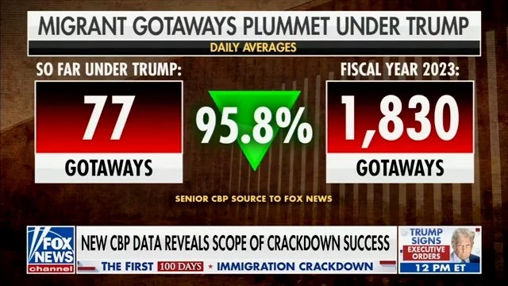
X post: "Migrant gotaways plummet under Trump", 95.8% drop in daily average. @DHSgov (U.S. Department of Homeland Security) on X | Date: 2025-03-14. Daily average gotaways: Trump 2 (77) vs FY2023 (1,830). Known gotaways, daily averages (government messaging graphic)
Source: https://x.com/DHSgov/status/1900585214549557745 https://pbs.twimg.com/media/GmA19TmXIAAp7Px.jpg
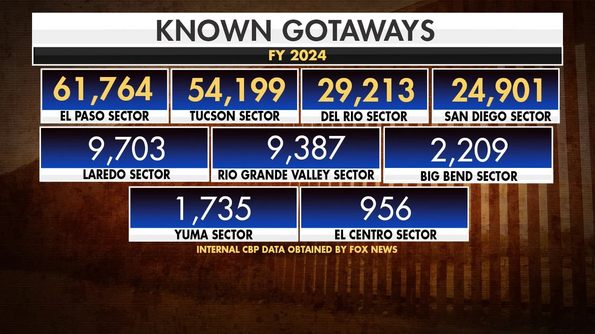
X post: known gotaways by Border Patrol sector, FY2024 to date. @BillMelugin_ (Fox News) on X | Date: 2024-06-20. Known gotaways by sector. Internal CBP data reported by sources
Source: https://x.com/BillMelugin_/status/1803795576749957337 https://pbs.twimg.com/media/GQheg6QagAA_lYp.jpg